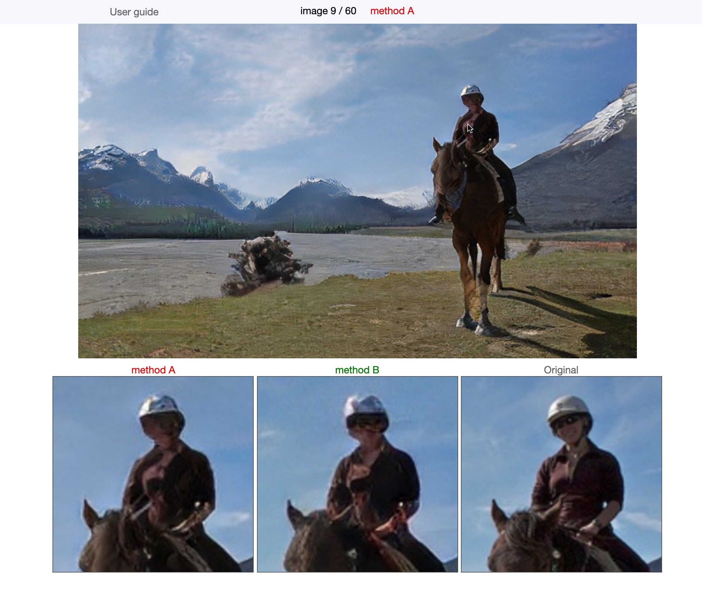

使い方
- キーボードの"1"を押すと methodA で符号化された画像，"2"を押すと methodB で符号化された画像，"3"を押すとオリジナルの画像が表示されます．
- キーボード以外でも，画像をクリック・右クリックすることで画像を切り替えることが可能です．
- 画像にマウスカーソルを合わせると，その部分が拡大されます．細部の比較にお使い下さい．
- 答えをGoogle Formに入力したら，キーボードの"N"を押すと次の画像に移ります．"P"を押すと前の画像に戻ることができます．
How to Use
- Press "1" on the keyboard to show the image compressed by methodA, "2" to display the image compressed by methodB, and "3" to show the original image.
- You can switch between images by clicking or right-clicking on the image.
- Move the mouse cursor over the image to zoom in on the area. Please use it to compare the details.
- After you have entered your answer into the Google Form, press "N" on your keyboard to move to the next image. You can go back to the previous image by pressing "P".